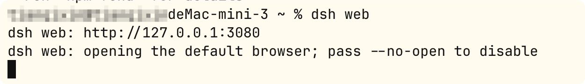
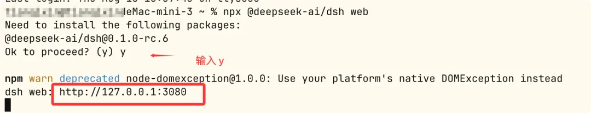

DeepSeek Harness Installation
This chapter introducesThree installation methods: npm one-click installation, source code installation, Python SDK.
Pre-installation preparation
DeepSeek Harness runtime is based on Node.js.The official recommended one-click installation method does not require any additional dependencies.
Source code installation also requires pnpm and Git.
The Python SDK method requires Python 3.10 or above.
Operating system:Linux, macOS, or WindowsAll can
The Python SDK supports Linux x64 / arm64 and macOS 14+ (arm64).
| Environment requirements | npm one-click installation | Source installation | Python SDK |
|---|---|---|---|
| Node.js | Required | Required | Not needed (runtime included with SDK) |
| Git | Optional | Required | Required |
| pnpm | Not Required | Required | Not Required |
| Python 3.10+ | Not Required | Not Required | Required |
| DeepSeek API Key | All three methods require (for configuring the model; also supports OpenAI-compatible endpoints) | ||
First check the local environment; Node.js is required, e.g., v20+:
node -v
git is required for source installation:
git --version
Installation method:
| Method | Who It's For | Output |
|---|---|---|
| npm one-click installation Recommended | Most users: want the fastest way to experience the Web UI | Start the Web UI, defaulthttp://127.0.0.1:3080 |
| Source installation Development | Want to develop plugins, read source code, or contribute | Local repository + complete build artifacts, availablepnpm dshDirectly run the TypeScript entry point |
| Python SDK Programmatic | Want to call the Agent in your own Python program | deepseek_harnessPackage + built-in runtime, no system Node.js required |
Method 1: npm one-click installation (recommended)
We can use the npm command to install globally:
npm install -g @deepseek-ai/dsh
Installing this way makes later use more convenientdshCommand. After installation is complete, enter the following command to start:
dsh web

You can also use the npx command to install and quickly try it out — run it in the terminal:
npx @deepseek-ai/dsh web
The command will start the Web UI, and it will automatically initialize on the first runwebConfiguration template, then prints the access address——The default ishttp://127.0.0.1:3080。

Verify whether it succeeded:
1. Open the address printed in the terminal in your browser (defaulthttp://127.0.0.1:3080）；
2. Installation is successful when you see the DeepSeek Harness web interface;
3. Note: the new Web UI will not select any workspace until a workspace is added——this is normal, it will be configured in the next step.
Tips:dsh willCall directoryas the default file system location. It is recommended to firstcdGo to your project directory and run:npx @deepseek-ai/dsh web, this makes it most convenient when selecting a workspace later.
Method 2: Install from source
Suitable for developing plugins, reading source code, or contributing. After cloning the repository, run in order:
git clone https://github.com/deepseek-ai/deepseek-harness.git cd deepseek-harness pnpm install # 安装依赖（需要 pnpm，可用 npm install -g pnpm 安装） pnpm run build # 构建包与前端产物（生产运行需要） pnpm dsh web # 以源码方式启动 Web UI
Other entry points when running from source:
pnpm dsh --profile headless "run the tests"— run a task once and print the final answer;
pnpm dsh --profile web --dump-config— View the complete configuration tree of the actual startup (useful when developing plugins).
Method 3: Python SDK Installation
Prerequisites: Python 3.10+, Git, a DeepSeek-compatible API endpoint and credentials, an isolated workspace the agent can modify. Create a virtual environment and install:
git clone https://github.com/deepseek-ai/deepseek-harness.git cd deepseek-harness python -m venv .venv . .venv/bin/activate python -m pip install deepseek-harness-sdk
After setting credentials, it can be called in the program (the SDK comes with a built-in runtime,No system-provided Node.js required）：
export DEEPSEEK_API_KEY=sk-your-key-here # 如果模型不是默认 DeepSeek 端点，而是 OpenAI 兼容代理，还需要： # export DEEPSEEK_BASE_URL=http://127.0.0.1:8000/v1 # export DSH_MODEL=deepseek-v4-flash
Use it in your own Python program:
from deepseek_harness import DeepSeekHarness— built into the repositoryexamples/jsonrpc-agent/minimal.pyis a lightweight wrapper for SDK calls and can be referenced directly; after running, it will print the assistant's final reply, and the session directory will receive JSONL logs containing model requests and tool calls.
First-time configuration and the first task
No matter which method you use to start the Web UI, first-time use only requires three steps:
| Steps | Operation | Description |
|---|---|---|
| 1Configuration model | Settings → Model | Enter the DeepSeek API key and save it. Model routingImmediately available, no server restart required; also supports other providers and custom OpenAI-compatible endpoints |
| 2Select workspace | Click "Select Workspace" | Add the project directory where dsh was launched and select it.The session input box is unavailable until a workspace is selected |
| 3Run task | Enter instructions in the session | For exampleSummarize this repository and identify its main packages.— the agent will read/write workspace files, run commands, delegate subagents, and maintain plans; operations beyond the permission policy will first seek your approval |
firstTaskSuggestionsfromLightweightDirectivestart："Summarize this repository and identify its main packages."
First let the agent get familiar with the workspace, then gradually assign real tasks.— Official quickstart guide recommendation
Common command quick reference
| Command | Function |
|---|---|
npx @deepseek-ai/dsh web |
Start the Web UI (equivalent to--profile web） |
dsh --profile headless "任务描述" |
Run a task once, print the final answer, then exit (suitable for scripts/CI) |
dsh plugin --profile <name> <pnpm 参数> |
Manage plugins for a profile (forwards to pnpm for execution in the profile directory) |
dsh --profile web --dump-config |
View the complete configuration tree of the actual startup (without starting the server) |
dsh --profile web --dump-default-config |
View the default configuration tree (without user patches) |
pip install deepseek-harness-sdk |
Install the Python SDK (with built-in runtime) |
About Profile:webandheadlessTwo profiles will be automatically initialized from built-in templates on first use; the remaining profiles need to bedsh plugincreated. dsh's startup arguments come first, application arguments come after, for exampledsh --profile web --port 8080Medium--portIt is a web application.
Common issues and troubleshooting
Issue 1: The browser cannot open http://127.0.0.1:3080
Confirm that the dsh process is still running in the terminal and there are no errors; if the port is occupied, you can usedsh --profile web --port 8080Change the port; check whether the firewall allows the local port.
Issue 2: npx cannot find @deepseek-ai/dsh or the version is too old
First make sure Node.js is installed and the version is relatively new (node -v); the project is in developer preview stage and iterates quickly. If necessary, clear the npx cache and retry, or switch to source code installation.
Issue 3: pnpm install / build fails during source installation
Confirm that pnpm is installed (npm install -g pnpm); when the network is restricted, you can configure a mirror source for npm/pnpm; the build requires the Node.js version to satisfy the engines declaration in the repository's package.json.
Issue 4: The session input box is unavailable / the agent cannot read or write files
The most common cause isNo workspace was selected— return to "Select Workspace" to add and select the project directory; confirm that a valid API key has been saved in "Settings → Models", and the model routing takes effect without restarting.
Issue 5: Python SDK runtime cannot find Node.js
The SDK comes with a built-in runtime and normally does not require system Node.js; if it reports a missing runtime, please confirm that you installed the complete package of the same version as the SDK (python -m pip install deepseek-harness-sdk), and use Linux x64 / arm64 or macOS 14+ (arm64) as per the official prerequisites.